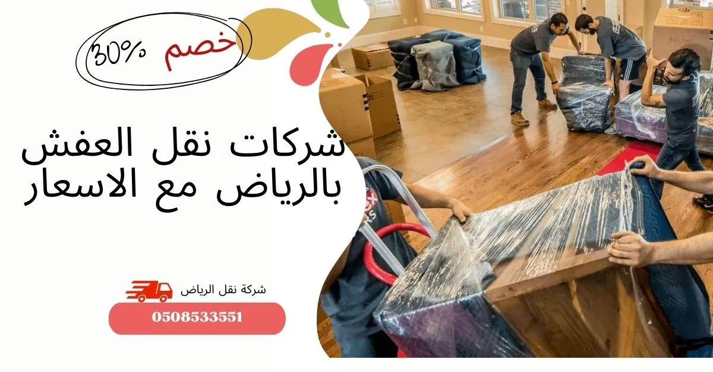

شركات نقل العفش بالرياض مع الاسعار

تعتبر شركات نقل العفش بالرياض مع الاسعار من الخيارات المثالية للأفراد والعائلات الذين يرغبون في نقل ممتلكاتهم بشكل آمن وسريع، كما أن هذه الشركات توفر خدمات متكاملة تشمل النقل والتغليف والفك والتركيب، مما يضمن الحفاظ على سلامة الأثاث، إذا كنت تبحث عن طرق لنقل أثاثك بسهولة ودون أي متاعب، فإن شركات نقل العفش بالرياض مع الاسعار هي الخيار الأنسب.
شركات نقل العفش بالرياض مع الاسعار
تتعدد شركات نقل العفش بالرياض مع الاسعار وتختلف في خدماتها وأسعارها، حيث تتخصص هذه الشركات في تقديم حلول شاملة نقل عفش بالرياض تشمل تغليف الأثاث بشكل احترافي باستخدام مواد آمنة مثل البلاستيك المغلف والورق المقوى لحماية القطع من الخدوش أو التلف، كما أنها تقدم خدمات فك وتركيب الأثاث بأسلوب دقيق يضمن عدم إتلاف القطع أثناء النقل، ومع بعض الشركات توفر أيضًا خدمات التخزين المؤقت إذا كانت بحاجة لتخزين الأثاث لفترة قصيرة، حيث تعتبر أسعار شركات نقل العفش بالرياض معقولة ومتفاوتة بحسب المسافة وعدد الأغراض، مما يسهل اختيار الأنسب حسب الميزانية.
افضل شركة نقل عفش بالرياض
تعتبر شركة نقل الرياض من أفضل شركات نقل الاثاث في السعودية، حيث تقدم خدمات متميزة تلبي احتياجات العملاء بكل احترافية، كما تقوم الشركة بتوظيف فريق متخصص من العمالة المدربة على أعلى مستوى، مما يضمن لهم القدرة على التعامل مع جميع أنواع الأثاث بشكل آمن ودون أي تلف، كما توفر الشركة خدمات تغليف الأثاث باستخدام مواد حماية حديثة لضمان وصول القطع إلى الوجهة سليمة بالإضافة إلى ذلك، تقدم الشركة خدمات فك وتركيب الأثاث على يد فنيين محترفين، مما يضمن سرعة وسهولة في النقل فـ هي تهتم بتوفير أسطول من السيارات الحديثة والمجهزة خصيصًا لنقل الأثاث بمختلف أحجامه وأوزانه وتتميز أيضًا بتقديم خدمات بأسعار تنافسية، مع ضمان رضا العملاء باختيار شركة نقل الرياض، يمكن للعملاء ضمان تجربة نقل مريحة وآمنة دون أي مشكلات.
نقل عفش بالرياض باكستاني
إذا كنت تريد أن تتم عملية نقل العفش في الرياض باستخدام العمالة الباكستانية، وذلك لأنهم خيارًا شائعًا للكثير من اهالي المملكة الكرام، حيث أن هذه تتميز الفرق بالكفاءة العالية والخبرة الطويلة في مجال نقل الأثاث، كما تعتمد شركات نقل العفش بالرياض مع الاسعار التي تستخدم العمالة الباكستانية على فرق محترفة قادرة على التعامل مع جميع أنواع الأثاث بحذر شديد وضمان سلامتها أثناء النقل، بالإضافة إلى أن هذه الفرق تتميز بالقدرة على فك وتركيب الأثاث بكفاءة وباستخدام الأدوات المناسبة لضمان عدم تلف القطع أثناء العملية بخلاف الخبرة، تقدم العديد من الشركات التي تستخدم العمالة الباكستانية خدمات بأسعار معقولة مما يجعلها خيارًا اقتصاديًا للكثير من العملاء في الرياض.
ارخص شركة نقل اثاث بالرياض
تقدم شركات نقل العفش بالرياض مع الاسعار خدمات متميزة بأسعار معقولة لتلبية احتياجات العملاء، وتعتبر من بين الشركات الرائدة في تقديم حلول نقل الأثاث بشكل آمن وفعال هي نقل الرياض، فـ مع استخدامها لأفضل المعدات والمواد المخصصة لضمان حماية الأثاث أثناء عملية النقل، تظهر الشركة التزامًا كبيرًا بتوفير تجربة سلسة للمستخدمين، بالإضافة إلى أنها تعتمد على فريق عمل مدرب ذو خبرة عالية في مجال نقل العفش والتعامل مع جميع أنواع الأثاث، مما يساهم في نقل القطع بأعلى درجات العناية علاوة على ذلك، توفر الشركة عروضًا مميزة تساعد في تقليل التكاليف على العملاء، مع تقديم خدمات إضافية مثل فك وتركيب الأثاث وتنظيفه بعد النقل.
مميزات شركات نقل العفش بالرياض مع الاسعار
- خصومات موسمية على جميع خدمات النقل.
- توفير خدمات إضافية بأسعار معقولة.
- فريق عمل مدرب بعناية.
- ضمان نقل آمن وسريع.
- تأمين الأثاث ضد التلف أثناء النقل.
شركات نقل العفش بين مدن المملكة
إذا كنت تريد الأنتقال من مدينة إلى أخرى من بين مدن المملكة، وكنت بحاجة إلى شركة متخصصة في نقل أثاث منزلك بسهولة يمكنك الاستعانة بشركة نقل الرياض، التي تعد واحدة من أبرز الشركات المتخصصة في نقل الأثاث بين مدن المملكة، كما تتميز الشركة بتقديم خدمات متميزة لضمان راحة العملاء أثناء عملية النقل، فهي تقدم حلولًا متكاملة تشمل تعبئة الأثاث، نقله، وتفريغه في الوجهة الجديدة بطريقة آمنة وفعالة، بالإضافة إلى أن فريق شركات نقل العفش بالرياض مع الاسعار يعتمد على استخدام معدات وتقنيات حديثة لضمان نقل الأثاث بدون تلف، كما أنها توفر خدمات إضافية مثل فك وتركيب الأثاث وتخزينه في حال كان هناك حاجة لذلك، ومن أهم مميزات شركة نقل الرياض أنها تقدم أسعار تنافسية تتناسب مع كافة الميزانيات، مع تقديم عروض موسمية وخصومات لعملائها إلى جانب ذلك، تضمن الشركة التأمين على الأثاث أثناء عملية النقل، مما يوفر راحة البال للعملاء وبالاعتماد على شركات نقل العفش بالرياض مع الاسعار يمكن للعملاء الاستمتاع بتجربة نقل آمنة وسهلة بين مختلف مدن المملكة.
تواصل معنا الآن لاستشارة مجانية
افضل شركة نقل عفش خارج الرياض
تعتبر واحدة من أفضل شركة نقل عفش خارج الرياض هي شركة نقل الرياض، والتي تتميز الشركة بتقديم خدمات نقل متكاملة تشمل جميع مراحل النقل من التعبئة والتغليف إلى النقل والتفريغ بأعلى مستويات الدقة والحرفية، وكل هذا باستخدام تقنيات حديثة ومواد تغليف عالية الجودة، تضمن الشركة الحفاظ على الأثاث أثناء النقل، مما يجعلها الخيار الأمثل للعملاء الذين يرغبون في نقل عفشهم بين الرياض ومدن المملكة الأخرى مثل جدة، الدمام، الخبر، والمدينة المنورة.
فـ من أبرز مميزات شركات نقل العفش بالرياض مع الاسعار تقديمها عروض وخصومات متنوعة للعملاء بشكل مستمر، بالإضافة إلى أسعارها التنافسية التي تضمن الحصول على خدمة مميزة دون الحاجة إلى التكاليف الباهظة، وذلك لأنها توفر خدمة تأمين الأثاث ضد أي تلف قد يحدث أثناء النقل، مما يعزز شعور العملاء بالأمان والاطمئنان.
كما أن الشركة تمتلك أقوى فريقًا من العمالة المدربة والمحترفة التي تمتلك الخبرة والقدرة على التعامل مع كافة أنواع الأثاث المختلفة، مما يساعد في نقل عفشك بأمان وسرعة لذا فإن شركة نقل الرياض هي الاختيار الأمثل لك إذا كنت تريد نقل عفش منزلك بطريقة آمنة ومريحة بين مدن المملكة.
الأسئلة الشائعة حول شركات نقل العفش بالرياض مع الاسعار
كيف تحدد شركات نقل العفش في الرياض الأسعار؟
تحدد الشركات الأسعار بناءً على عدة عوامل مثل المسافة بين الأماكن، عدد القطع المنقولة، وعدد ساعات العمل اللازمة، كما أنها توفر أفضل العروض والخصومات التي تصل إلى 30%.
هل توفر شركات نقل العفش خدمة التأمين على الأثاث؟
نعم، معظم شركات نقل العفش بالرياض مع الاسعار تقدم خدمة التأمين على الأثاث خلال عملية النقل، مما يضمن حماية الممتلكات ضد أي أضرار قد تحدث أثناء النقل، ومن أبرز الشركات التي توفر تأمينًا هي شركة نقل الرياض.
كم من الوقت يستغرق نقل العفش من منزل إلى منزل؟
يختلف الوقت حسب حجم الأثاث والمسافة بين المنازل، لكن عادة ما يستغرق النقل بين 4 إلى 6 ساعات.
في الختام يمكن القول أن شركة نقل الرياض هي الخيار المثالي لأي شخص يبحث عن خدمات شركات نقل العفش بالرياض مع الاسعار وتكون عالية الجودة، حيث تقدم الشركة جميع خدمات النقل باحترافية، من فك وتركيب الأثاث إلى التغليف وحمايته باستخدام أفضل المواد،بالإضافة إلى أنها تضمن سلامة الأثاث خلال النقل بفضل فريقها المدرب وأسطول السيارات الحديثة، مع توفير أسعار تنافسية وخدمات مميزة نجد أن شركة نقل الرياض الاختيار الأمثل لمن يبحث عن تجربة نقل سهلة وآمنة، لذلك لا تتردد في التواصل مع الشركة لضمان أفضل خدمة لنقل أثاثك بكل راحة وأمان.